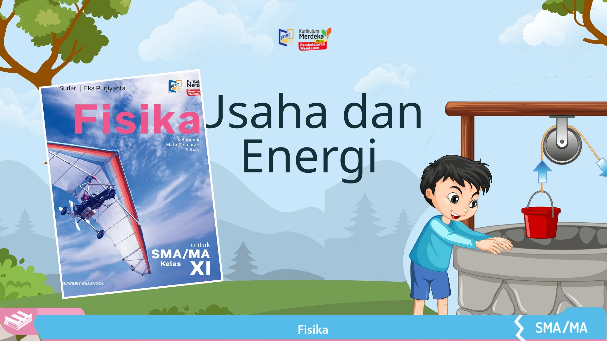

01 / 08
Geser slide dengan satu jari untuk berpindah
Mode Presentasi Kelas langsung aktif. Geser satu jari ke kiri atau kanan untuk berpindah slide. Ketuk Kuis untuk membuka latihan pada slide tanpa meninggalkan presentasi.
Pintasan: ←/→ berpindah slide, K membuka kuis, F untuk layar penuh, Esc menutup dialog, dan T memunculkan bilah alat. Hasil kuis disimpan hanya pada browser perangkat yang digunakan.